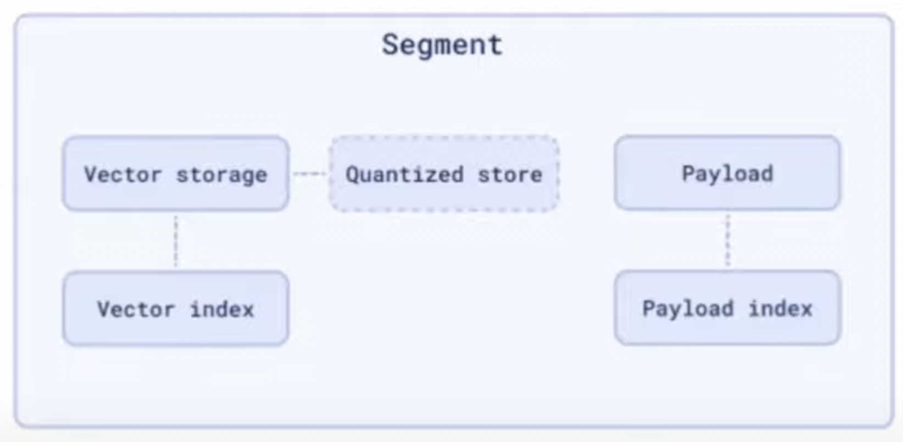

- Andrey is co-founder, CTO at Qdrant. Working w/ search engines since 2014.
- Qdrant : Vector Similarity Search Engine, OSS, Written in Rust
Vector Search : Overview §
- You’ve an encoder (typically a neural network) which can convert some input data into dense vector representations (also called embeddings).
- Pair of vectors in vector space which are close to each other usually corresponds to objects which are also similar in some sense.
- The type of similarity we want to catch is defined by the model. The distance function b/w the vectors is also defined by the model but it’s a simple dot product in most cases.
Qdrant : Architecture §
- Hierarchy: Collection <- Shard <- Segment
- Collection
- Isolates types of data. Contains shards.
- Similar to Table in relational DBs.
- Raft is used to keep track of metadata (eg. location of collection, configuration etc.)
- Shard
- Isolates subsets of data. Contains segments.
- It’s guaranteed that shard contains only non-overlapping subset of records.
- Can be moved b/w nodes & replicated for higher availability.
- Segment
- Isolates index & data storage.
- Each segment is capable of performing the same operations as a Collection but on a small subset of data.
- ACID vs BASE
- BASE stands for Basically Available Soft-state Eventually-consistent
- A system like Postgres is a typical example of ACID database with strict transactional guarantees & cares a lot about consistency of data but it’s scalability is very limited (upto the size of a single machine). On the other hand, a system like Elasticsearch is an example of a BASE system since it has weaker consistency guarantees but is very scalable.
- Sidenote: https://aws.amazon.com/compare/the-difference-between-acid-and-base-database/
- For Qdrant, scalability & performance is more important.
- Should be treated as a search engine & not as a database.
- Shouldn’t be used as a primary storage. (10:30)
- A new version of model (common operation in vector DBs) will need to wipe the whole DB if the encoder is changed.
- Shard Internals
WAL -> Segments Holder <- Optimizer- Shards don’t usually have a second level of separation (segments) in other DBs.
- Reasons for not putting all the data in a single segment
- Immutability
- If the structure is only built once & never extended then:
- Data structure becomes more compact & we don’t need to jump b/w different locations in memory so we’ve less cache misses.
- All data statistics is known in advanced so we can perform various optimizations like pre-computing histograms, data distributions etc.
- Allocate the exact amount of memory needed so no memory fragmentation.
- Loading computable data structures is faster since no disaggregation needs to be done since you just copy a row chunk from disk in memory. You could even do mmaping which is even faster.
- Compress data using Delta encoding, variable byte encoding etc.
- Latency vs Throughput
- Concurrency of single request is only efficient to a certain point. The closer we get to low-level index, the less efficient concurrency becomes.
- For low latency, we can optimize CPU utilization by just assigning each CPU core with 1 segment.
- For high throughout, we can have a single large segment & in this case it’ll maximize the throughput of the whole system by just serving each request on a dedicated core using the whole segment in read mode.
- Q/A: What’s the size of the segment?
- Variable. Default size is 0 if there’s no data. It just grows with the data.
- We prefer to configure the number of segments instead of the size.
- You can go as big as you want if you’ve the resources.
- Q/A : Is there any advantage of having segments of different sizes within the same shard?
- No because we prefer to have even distribution. In practice though, it may happen because segments are joined during the insertion of data & you always need to have atleast 1 segment that’s not immutable.
- Q/A : Is the segment size configurable at runtime? No. Only number of segments.
- Segments Management
- Some segments in a shard are immutable while others are just mutable & used to insert new data.
- We need to maintain illusion for the user that the collection is mutable & that the user can insert, delete, update any data at any time.
- How to update data in immutable data structure?
- Use copy-on-write. Whenever user inserts or updates data in the immutable segment, the data is copied into a mutable segment & marked as deleted in the old segment.
- How to obtain the immutable data structure?
- We need to perform long running optimizations in the segment so index building is quite long & that’s why we need to keep the segment available for read & updates from the user.
- We use a proxy segment which is a special type of segment that wraps the segment being currently optimized. Also holds the list of modifications it needs to apply to resolve conflict which is happening when you copy data from old segment into new.
- When optimization is done, the proxy segment is converted back into regular segments (optimized segment + small copy-on-write segment).
- Segments Internals
- 
- Didn’t describe any details. Mentioned that the concrete implementation depends on configuration. They’ve 3 different implementations of vector storage currently.
Vector Index §
- Approximate Nearest Neighbours (ANN)
- All vectors are candidates for the response
- Different flavours
- Annoy : tree-based
- IVFPQ : clustering-based
- HNSW : graph-based (used in Qdrant)
HNSW (Hierarchical Navigable Small World) §
- Internally appears as a proximity graph (each vector is represented as a node in the graph & those nodes are connected with a number of closest neighbours)
- Greedy search on the proximity graph (choose closest node -> repeat with new selected node until the distance b/w the node & target can’t be improved)
- No guarantee of search resulting in the closest target
- Precision can be controlled (more precision, less speed)
- Challenges
- Index building is CPU intensive & might affect search if it doesn’t have dedicated resources
- Index has a random data access pattern. Techniques like pre-fetching, block-reading aren’t efficient.
- Read pattern is sequential (we go from one graph to another)
- Solving the challenges of HNSW index
- Quantization + Oversampling
- Generate compressed in-memory representation of vectors & use it to generate a selection of vectors
- Sidenote: Recently added binary quantization. Single dimension represented by single bit. 32x compression. Allows comparing vectors in just 2 CPU instructions (bitwise sort, pop-count). Works well with large vectors.
- OpenAI provides vectors with ~1.5K dimensions.
- Docs recommend using this feature for vectors w/ 1K+ dimensions.
- The generated selection is replaced by the original vectors. Scoring process can be parallelized unlike traversal as we already know offsets of IDs of candidates. We can also use slower storage devices.
- Q/A: What do you do with the quantized vectors against the original vectors?
- HNSW on quantized vector -> Get selection -> Re-scoring using original representation (Fetch the vectors from disk in parallel -> Compute the score)
Filterable HNSW §
- Combining vector search with other filters (in-place, not pre or post)
- Pre or Post filtering is inefficient compared to in-place filtering (filters checked using graph traversal).
- Problem arises when the filtering condition is so strict that the graph becomes disconnected & we can no longer find the path b/w the entry-point of the graph & the section which contains the desired result.
- Percolation Theory
- How many nodes should be removed from the graph to make it disconnected?
- Critical Threshold, pc = 1 / <k>
- pc : leaved nodes fraction
- <k> : average node degree
- In practice, precision collapses entirely after removing 90% of nodes.
- Payload-based refinement
- We know that the filters aren’t random & are based on some metadata associated with vectors.
- Build additional links in accordance w/ expected filtering conditions so that when a filter condition is applied, the graph stays connected regardless of the strictness of search.
- This approach doesn’t increase the search complexity. We can still perform search using original links where it’s needed & utilize the extra links where it’s being filtered out. It’s also compatible with multiple (filter) fields at once.
- Sub-graphs are merged into the main graph. We can also de-duplicate links so only a fraction of memory will be required for this & search speed won’t be effected.
- Note: Important thing about this additional payload & associated payload indexes is that data type of payload does matter but in most cases it’s possible to come up w/ a strategy to cover filter conditions w/ a subgraph.
- For eg: For a numerical field where we don’t have exact keyword which define a strict subset of points but in this case we can build a sub-graph for overlapping intervals. We know which interval covers how many points & we know the minimum threshold of how many points should be in a graph so we build overlapping intervals & we build sub-graphs for those additional intervals.
Q/A §
- Is the search guaranteed to be exact or is it also approximate?
- Search is approximate. But filter conditions will be satisfied.
- Are you vectorizing those additional metadata fields?
- No. We keep the payload alongside the vector & check the condition during search.
- Does quantization affect filtering?
- No. It only affects the precision of the vector search & not filtering.
- Does Qdrant do any cardinality estimations to determine the query plan?
- If I had something like “customerId” & know that they are always going to be separated out, would you recommend using different collections or is there a filter for that?
- Qdrant can build HSNW graph only based on payload so we can skip building the whole main graph for all points & only build sub-graphs for specific user ids. We can search for the user or still scan the whole collection & we don’t have to spend as much resources for building vector index for all points together.
- No overhead of creating multiple collections.
- What’s the complexity of creating this HNSW index as the no. of records & dimensionality of each vector grows?
- Dimensionality affects how fast you can compare a pair of vectors. Linear complexity.
- Complexity of graph search & building it is approximately logarithmic?. It’s quite expensive to build large indexes.
- The process of indexing involves search too since you need to first search for its neighbours & then perform changes in the graph.
- Can these links cross across segments or shards?
- No. Links are isolated to 1 segment.
- Each segment is queried individually during search. Similar approach is used in full text search engines.
- Are the segments random or based on some sort of spacial partition?
- Segments are completely random. We don’t do any kind of clustering inside when inserting points because clustering depends on type of vectors & model which we don’t know in advance. Could be a good approach for a specific project where you know what embedding model you’re going to use but not applicable in the general case.
- How are the expected filtering conditions determined? Are they pre-determined is some sort of prepared query fashion?
- User can specify what fields need to be indexed.
- How do you decide how many new links to add & how much does this blow up the graph? If you’ve any predicate that has any attribute that’s even relatively high (say 100 values), you’d end up adding a lot of new edges to make it work?
- We allow users to configure this value (no. of additional links) in the configuration of collections. By default we use the same amount as the original graph has.
- This is usually not a big problem since they’re being de-duplicated. If a link exists in the original graph, a link won’t be added explicitly on top of it after the merge process.
- HNSW has a special heuristic which allows it to reduce redundant nodes on its own. (Is this Qdrant implementation or just in general?)
- How does your approach with HNSW + quantization compare w/ Microsoft’s disk ANN?
- Disk ANN doesn’t use quantization. Data structure is similar w/o any hierarchy. Difference is in how you build it. HNSW assumes that when you insert a new point, you create a new link for this point in the existing graph.
- Disk ANN on the other hand builds a fully connected graph & then prunes it.
- Disk ANN doesn’t have any in-memory storage.
- Do you’ve experience w/ checking similarities for time-series data?
- Qdrant assumes that embeddings are made from an external model. If you’ve a model which can translate time series data into vector then you can use it.
- You can have a model representation the series of actions as a vector. Similar to how word2vec works.
- What’s the biggest unsolved problem you face in your system?
- Making it cheap to store 1B vectors.
Appendix §